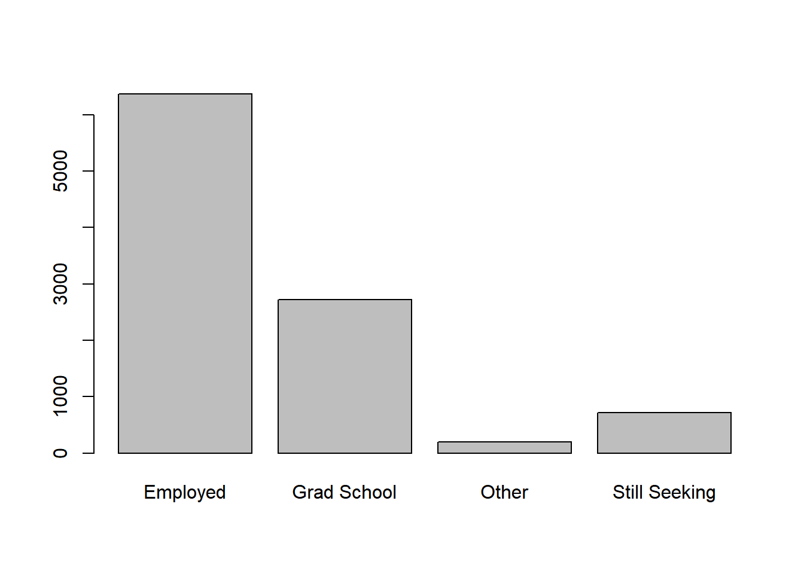

I needed a dataset, so I created one!
I co-taught then solo-taught the pre-conference workshop at the Michigan Association for Institutional Research in 2017 and 2018. The topic was an introduction to R. I knew I needed a dataset that would engage my audience. It had to be relevent to their work as professionals in higher education. I could have dumped some data from our database and deidentified it, but instead I thought I would cease the opportunity as a learning tool. I created my own dataset with interesting qualities. By interesting, I mean statistical effects such as mean differences between groups, variables that explain variability in other variables (and perhaps at variable levels!), and the ability to be charted and graphed in fun or useful ways.
For this post, we’ll create these datasets purely with base R functions. However, I use ggplot2 to show how the dataset is interesting with plots.
A few good reasons to create your own dataset:
A few bad reasons:
We’ll create a dataset that showcases what recent college grads do after they graduate and what factors might impact their outcomes. For example, is taking advantage of the university’s career center related to post-graduation salary? Another example is whether grads with higher GPAs have higher employement rates.
We’ll need to learn to use a few base R functions such as sample() and rep(). If you feel confident with these functions then you could probably skip ahead to the next section.
To efficiently create a dataset, we want to write the smallest amount of code as possible. That’s where sample() and rep() come in. With sample() we can randomly sample from a small subset of values (e.g., a validation-set) and then we could repeat that sampling, or anything else, with rep(). Let’s take a look.
# chose 3 random numbers from an integer vector of 1 to 10
sample(1:10,size = 3)## [1] 2 1 8# same as above except that I sample 11 times and
# every time a number is sampled it's then put back into the pool
sample(1:10,size = 11,replace = TRUE)## [1] 9 1 7 5 2 8 5 1 10 6 2# bonus, I won't run these, but try them at home!
# choose 1 to 10 random numbers from an integer vector of 1 to 10
# lapply(1:10,function(x) sample(x,size=x))
# same as above except that every time a number is sampled,
# it's then put back into the pool and could be randomly selected again.
# lapply(1:10,function(x) sample(x,size=x,replace=TRUE))# repeat 1 to 5 twice
rep(1:5,2)## [1] 1 2 3 4 5 1 2 3 4 5# take a sample of 6 items from a pool of integers 1 to 5
# and repeat that exact sample twice
rep(
sample(1:5,size = 6,replace = TRUE),
2)## [1] 3 3 3 5 3 3 3 3 3 5 3 3# take a sample of 12 items from a pool of integers 1 to 5
# don't use repeat so that all 12 are random
sample(1:5,size = 6*2,replace = TRUE)## [1] 3 1 1 5 1 1 4 5 4 2 5 2# sample "yes" and "no" 10 times,
# force that sample to be %80 yes and %20 no
# repeat that exact sample twice
rep(sample(c("Yes","No"),prob=c(.80,.20),size = 10,replace = TRUE),2)## [1] "Yes" "Yes" "Yes" "Yes" "Yes" "Yes" "Yes" "Yes" "Yes" "Yes" "Yes"
## [12] "Yes" "Yes" "Yes" "Yes" "Yes" "Yes" "Yes" "Yes" "Yes"Once you understand the basics of rep() and sample() creating a full on dataset is fairly straightforward.
set.seed(100) # number generator so 'random' numbers are reproducibile
n_students <- 1000 # the number of number of grads per cohort
# five years of grads where:
# the suffix 10 = winter semester grads
# the suffix 40 = fall semester grads
terms <- sort(rep(c(paste0(2014:2018,"10"),paste0(2013:2017,"40")),n_students))
n_terms <- length(unique(terms)) #number of terms generated
air_df <- data.frame( # make it a dataframe
student_id = 1:(n_students*n_terms), # arbitrary unique identifier
term_code = terms, # assign terms as term_code
# randomly assign one of the three schools, do it for every grad for every term
# eg "BA" = Business Administration
school = sample(c("BA","AS","EG"),size=n_students*n_terms,replace=TRUE),
# randomly assign an admit code, do it for every grad for every term,
# but repeat the same order term after term
ATYP = rep(sample(c("F","T"),size=n_students,replace=TRUE),n_terms),
# randomly assign a binary sex code, do it for every grad for every term,
# but repeat the same order term after term
# and force the porportion to be %55 Male
sex = rep(sample(c("M","F"),prob=c(.55,.45),size=n_students,replace=TRUE),n_terms),
# randomly assign an residency code (eg in-state), do it for every grad for every term,
# but repeat the same order term after term
residency = rep(sample(c("I","O"),size=n_students,replace=TRUE),n_terms),
# number of times a grad met with career services (from 0 to 10 times)
# force a random uniform distribution across the dataset.
career_use = round(runif(n_students*n_terms,0,10)),
# randomly assign a post-graduation outcome, do it for every grad for every term,
# and force the porportion to be %64 Employed, %27 Grad School, etc
post_grad_outcome = sample(c("Employed","Grad School","Still Seeking","Other"),prob=c(.64,.27,.07,.02),size=n_students*n_terms,replace=TRUE),
# these vars are placeholders
gpa = 0,
salary = 0,
# let the strings be chracters, not factors
stringsAsFactors = FALSE
)
# use a linear regression equation to force relationship
# between career_use and gpa for Freshman admits
air_df$gpa <- ifelse(air_df$ATYP=="F",
#intercept + slope*value + error/noise
#different slopes for a nice interaction effect
2.5 + .15*air_df$career_use + rnorm(n_students*n_terms,0,1),
3.7 + .01*air_df$career_use + rnorm(n_students*n_terms,0,1))
# adjust for impossible values (ie a GPA greater than 4.0 or less than zer0)
air_df$gpa = ifelse(air_df$gpa>4,runif(n_students*n_terms,3.2,4),air_df$gpa) # keep gpa under 4
air_df$gpa = ifelse(air_df$gpa<0,runif(n_students*n_terms,0,1),air_df$gpa) # keep gpa above 0
air_df$career_use <- ifelse(air_df$post_grad_outcome=="Employed",
#intercept + slope*value + error/noise
#different slopes for a nice interaction effect
sample(0:10
,prob=c(3:13)
,replace=TRUE
,size=length(
air_df$career_use[air_df$post_grad_outcome=="Employed"])),
air_df$career_use)
air_df$salary <- ifelse(air_df$school=="EG",
#intercept + slope*value + error/noise
#different slopes for a nice interaction effect
64000 + 750*air_df$career_use + rnorm(n_students*n_terms,0,1000),
ifelse(air_df$school=="AS",
48000 + 10*air_df$career_use + rnorm(n_students*n_terms,0,4000),
51000 + 400*air_df$career_use + rnorm(n_students*n_terms,0,2700)))
air_df$salary <- ifelse(air_df$post_grad_outcome=="Employed",air_df$salary,NA)Here’s a basic plot showing the number of graduates with each post-graduation outcome and how we forced each level to exist in a specific proportion by specifying post_grad_outcome = sample(c("Employed","Grad School","Still Seeking","Other"),prob=c(.64,.27,.07,.02),size=n_students*n_terms,replace=TRUE).
barplot(table(air_df$post_grad_outcome))
Below, I included a report that I built with this dataset as a teaching tool at the 2018 Pre-conference for the Michigan Association for Institutional Research. Note that a few of the plots and tables below use recoded variables and two other datasets that I created as well. I included the data tidying we performed and one of the other datasets. The other dataset was a simple two column csv file with industries and counts. Eventually, I will create a blog post detailing this report.